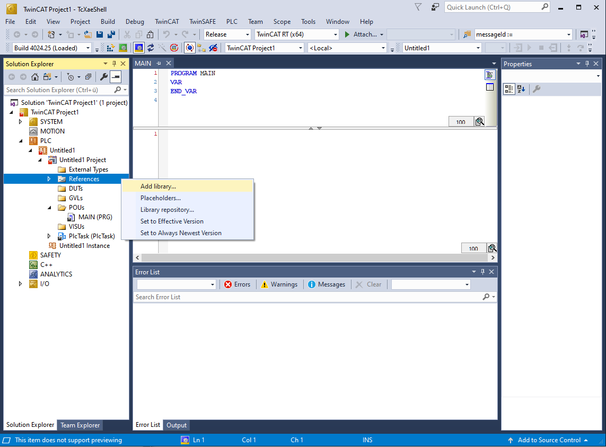
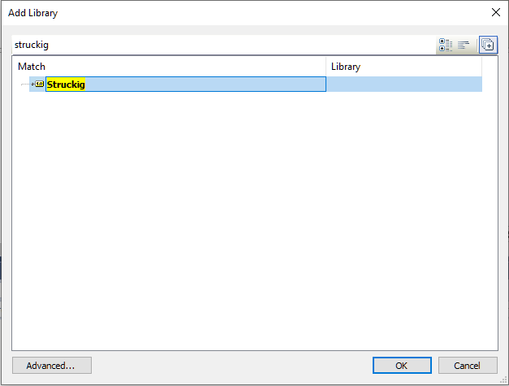

Installation and First Motion
This page gets Struckig running in a TwinCAT project and validates the setup with a minimal 1-DoF trajectory.
1) Install the library
Choose one of the following:
- Download a precompiled release from GitHub Releases.
- Build from source in the repository.
For TwinCAT users, the fastest route is usually the precompiled .compiled-library package.
2) Add Struckig to your PLC project
- Open your TwinCAT solution.
- In the PLC project, right-click
References. - Select
Add library.... - Search for
Struckigand confirm.
After this step, Struckig types like Struckig.Otg are available in Structured Text.


3) Run a minimal 1-axis example
Create or replace your MAIN program:
PROGRAM MAIN
VAR
otg : Struckig.Otg(cycletime := 0.001, dofs := 1) := (
EnableAutoPropagate := TRUE,
MaxVelocity := [2000.0],
MaxAcceleration := [20000.0],
MaxJerk := [800000.0],
CurrentPosition := [0.0],
CurrentVelocity := [0.0],
CurrentAcceleration := [0.0],
TargetPosition := [100.0],
TargetVelocity := [0.0],
TargetAcceleration := [0.0]
);
axisTargetPosition : LREAL;
END_VAR
otg();
axisTargetPosition := otg.NewPosition[0];
4) Verify behavior
otg.Stateshould beBusywhile the move is active, thenIdle.otg.NewPosition[0]should move smoothly from0.0to100.0.- Your PLC task cycle time should match
cycletime.
Tip
EnableAutoPropagate := TRUE is the standard online mode. Struckig automatically copies New* values back into Current* after each cycle.
5) Next steps
- Learn parameter details in Single Axis Trajectory.
- Learn multi-axis synchronization in Synchronized Trajectory.
- See more practical snippets in Examples.